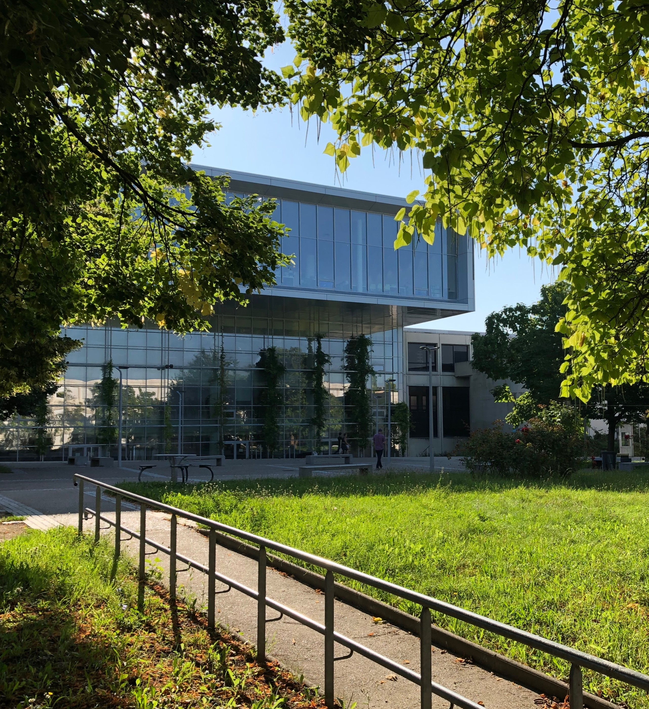

Étudiante en BUT 2 Réseaux & Télécommunications
Spécialisée en Réseau et infrastructure informatique.

Je suis actuellement une étudiante en deuxième année de BUT Réseaux & Télécommunications (spécialité Cybersécurité) à l'Université Sorbonne Paris Nord. Dans cette formation, j'aborde des thèmes comme l'administration des systèmes et la sécurisation des infrastructures.
Jeux RTS : Réactivité, sens tactique et prise de décision.
Persévérance et sens du détail sur des projets longs.
Adaptabilité et ouverture d'esprit.
Voici toute les compétences et les outils que j'ai pu maitriser à travers mon cursus en BUT et mes projets pratiques.
Déploiement et gestion d'environnements clients et serveurs, gestion des identités et des accès.
Conception de topologies, configuration d'équipements actifs et mise en place de services réseaux.
Analyse de trafic, sécurisation des accès, audit de vulnérabilités et sensibilisation.
Développement d'outils pour l'administration, l'automatisation de tâches et la gestion de données.
Voici un aperçu des compétences et des acquis que j'ai consolidés à travers les différents projets menés lors de ma formation.
Mise en place et configuration d'un réseau informatique complet. Définition de la topologie, implémentation des services et rédaction des livrables techniques.
Difficultés : La coordination à 6 a été complexe. J'ai dû mettre en place des outils de suivi pour éviter que les configurations ne se chevauchent.
Acquis : J'ai amélioré ma capacité à concevoir une topologie logique sur Packet Tracer avant de passer sur du matériel physique. Autonomie sur le routage statique.
Acculturation d'un public novice aux bonnes pratiques d'hygiène numérique. Diagnostic des risques et vulgarisation technique.
Démarche : Analyse des failles humaines les plus courantes (phishing) et création de supports visuels adaptés à un public non technique.
Acquis : Renforcement de mes compétences en communication et en pédagogie. J'ai appris à traduire des termes techniques (Cyber) en langage clair.